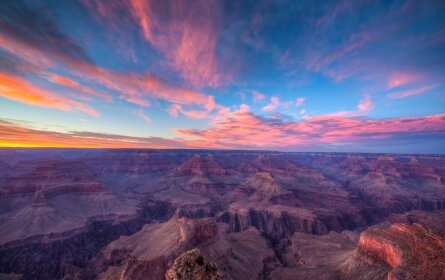

Glacier National Park offers more than 700 miles of hiking trails that crisscross the northern Montana park's roughly 1 million acres of wilderness. Keep an eye out for the bears, beavers and bighorn sheep that populate the park while you climb up, across and around its towering mountains and freshwater streams. You'll find trails that appeal to everyone, including several that are wheelchair accessible like Trail of the Cedars. Seasoned hikers can take on harrowing trails to Grinnell Glacier or the Granite Park Chalet. Before starting your journey, stop by a visitor center or ranger station to plan the perfect adventure.
#2 Zion National Park
Sandstone cliffs with varying shades of red tower over visitors at Zion National Park. Three areas house this Utah national park's trails and attractions: Zion Canyon, the Kolob Canyons and the Kolob Terrace Wilderness. The less-visited Kolob Canyons and Kolob Terrace Wilderness sections appeal to explorers due to their group size limits and primitive amenities. Meanwhile, Zion Canyon is the easiest to reach thanks to its shuttle service to multiple trailheads, including the famous and challenging Narrows and Angels Landing (permit required). Keep in mind, though, that the shuttle only runs from late May through late November.
#3 Grand Teton National Park
The Teton Range creates the backbone of Grand Teton National Park, and hikers here can count on scenic views while weaving up and around the peaks. The park, which sits in Wyoming's Jackson Hole valley, caters to every level of hiker with its more than 200 miles of trails. While you traverse the trails in popular areas like Cascade Canyon and Jenny Lake, keep your eyes peeled for grazing bison and soaring bald eagles. Also remember to pack bear spray since black and grizzly bears are frequently spotted here. For the best hiking conditions, arrive between May and October.
#4 Mammoth Lakes
This California town in the Eastern Sierra draws adventure travelers with a long ski season, but its 300-plus miles of trails that curve through granite peaks, forests and alpine lakes are equally invigorating. Crystal Lake Trail, a moderate hike with panoramic views of the Mammoth Lakes Basin, is a must-do. Meanwhile, a trip to the Devils Postpile National Monument provides access to the Pacific Crest Trail, a bucket list trek for many backpackers. As an added bonus, Mammoth Lakes sits near some of California's best hot springs, so you'll be able to end your day of exertion with a well-deserved soak.
#5 Yosemite National Park
Most travelers flock to the Yosemite Valley area of Yosemite National Park to explore some of the park's most popular trails. Though you may have to rub elbows with other hikers as you traverse world-renowned paths like the daunting Half Dome Trail (permit required), you'll be rewarded with stunning vistas. For a less-crowded atmosphere and gorgeous views of kaleidoscopic wildflowers, timeworn sequoias and jaw-dropping rock formations, consider hiking quieter routes like the Four Mile Trail and the Swinging Bridge Trail. You'll have about 800 miles of trails to choose from in this nearly 750,000-acre park in central California.
#6 Rocky Mountain National Park
This national treasure roughly 70 miles northwest of Denver is a Colorado must-see. With a base camp packed with amenities (Estes Park), exciting wildlife opportunities (think: moose, elk and bighorn sheep) and more than 350 miles of trails, Rocky Mountain National Park is a hiker's dream. Advanced trekkers looking to conquer a 14er (a peak higher than 14,000 feet above sea level) can climb the majestic Longs Peak. But travelers of all skill levels can catch an eyeful of the park's unparalleled beauty on routes like Emerald Lake Trail, which passes by four alpine lakes, and the Ute Trail, which affords exceptional views with minimal elevation gain.
#7 Grand Canyon National Park

Even for seasoned hikers, the combination of this Arizona national park's immense size and its unique climate make for an unforgettable adventure. The Grand Canyon's rims provide trails with varying degrees of difficulty and panoramic views. You'll find frequented routes like the Bright Angel Trail and the Rim Trail along the canyon's South Rim. If you're looking to avoid the crowds, head to the North Rim to trek paths like the challenging North Kaibab Trail. No matter which trails you plan on exploring, you'll want to set aside several days and map out your visit ahead of time.
#8 Pisgah National Forest
Hikers make a beeline for this vast forest in western North Carolina for its perennial beauty. Depending on the time of year, Pisgah National Forest might be dotted with wildflowers, bursting with wild blueberries or awash with fall foliage. Trails like Looking Glass Rock Trail grant stunning views of the Blue Ridge Mountains, while others lead trekkers to gorges and waterfalls. The Appalachian Trail also passes through this forest, so visitors can walk along the iconic route on trails like the easy, but no less scenic, Max Patch Trail. What's more, Pisgah National Forest's proximity to Asheville gives travelers access to top-notch amenities.
#9 Olympic National Park
Olympic National Park draws avid hikers from around the world to its 600-plus miles of top-notch trails on Washington's Olympic Peninsula. Take your time hiking through the park's old-growth rainforests, across its glacier-capped mountains and along its more than 70-mile-long coast. During your journey, you may catch a glimpse of threatened or endangered wildlife like northern spotted owls and gray whales. To familiarize yourself with the park's ecology while enjoying a pleasant hike, walk the Hoh Rain Forest's Hall of Mosses Trail.
#10 Pictured Rocks National Lakeshore
One of Michigan's top spots to visit, Pictured Rocks National Lakeshore sits on the southern shore of Lake Superior. Visitors will have their pick of 100 miles of trails that encompass everything from sandy beaches to jagged sandstone cliffs. Chapel Loop is a popular 10-mile option that includes cliffside views, several waterfalls and a peek at the weather-carved Chapel Rock. Meanwhile, the Sable Falls Trail offers views of the park's Grand Sable Dunes. Though Pictured Rocks is stunning in any season and winter brings exhilarating ice climbing opportunities, April through November are the best months for hikers to avoid road closures and snow-covered trails.